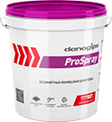

Полимерные шпатлевки, грунты, гидроизоляция, гипсовые плиты, профессиональные инструменты и аксессуары для отделки
8 800 250 79 26
Звонок бесплатный
Меню
Полимерные шпатлевки, грунты, гидроизоляция, гипсовые плиты, профессиональные инструменты и аксессуары для отделки
Справочная информация
В ассортименте Danogips широкий выбор полимерных шпатлевок. Каждая шпатлевка разработана так, чтобы оптимально решать одну из задач, стоящих перед мастером-отделочником, будь то финишное шпатлевание, выравнивание в плоскости или заделка стыков гипсокартона. Чтобы выбрать наиболее подходящий продукт, пожалуйста, используйте таблицу ниже!
 |
 |
 |  |
 |
|
|---|---|---|---|---|---|
| Super Finish | Fill & Finish Light | Pro Spray | Dano Top 5 | Dano Top 9 | |
| Толщина нанесения, мм. | 2 | 3 | 1,5 | 3 | 2 |
| Плотность, кг/л. | 1.65 | 1.23 | 1.7 | 1.65 | 1.65 |
| Усадка |  |
||||
| Пластичность | |||||
| Открытое время работы | |||||
| Легкость шлифования | |||||
| Применение для отделки стыков | + | + | - | - | - |
| Рекомендовано механизир-е нанесение | + | - | + | + | + |
| Итоговое качество поверхности |
* — низкая(ое) ***** — высокая(ое)
Также для Вас мы собрали ответы на часто задаваемые вопросы. Если вы не нашли среди них нужную Вам информацию, пожалуйста, позвоните нам на горячую линию:
Можно ли использовать ваши смеси для заделки стыков гипсокартона?
Да, для заделки стыков гипсокартона с утоненной кромкой нужно использовать Fill&Finish Light Danogips. За счет сниженной усадки вам не придется многократно шпатлевать стыки ГКЛ для выравнивания стыка в плоскости. Великолепная адгезия обеспечит надежное соединение ГКЛ с бумажной лентой Sheetrock.
Какой материал Вы рекомендуете для заделки стыков гипсокартонных листов?
Шпатлевка Fill&Finish Light превосходно подходит для заделки швов ГКЛ с утоненной кромкой. Fill&Finish Light на 35% легче, чем стандартные готовые шпатлевки, имеет минимальную усадку (<10%) и благодаря своей великолепной адгезии к основанию применяется в паре с бумажной лентой Sheetrock. Легко шлифуется, тем самым упрощая работу со швами.
Какой материал Вы рекомендуете для приклеивания лент и углов?
Мы рекомендуем использовать готовую шпатлевку Fill&Finish Light Danogips. Благодаря своей великолепной адгезии, сниженной усадке и простоте в обработке (легко шлифуется) она идеально подойдет для приклеивания бумажных/металлизированных лент Sheetrock, а так же металлизированных уголков на бумажной основе Sheetrock.
Для чего предназначены ваши уголки?
Металлизированный уголок на бумажной основе Sheetrock предназначен для отделки внутренних и внешних углов гипсокартонных стен и потолков, а так же всех видов минеральных поверхностей. Покрытие уголка бумажной лентой обеспечивает идеальное сцепление со шпатлевкой и красками, гарантируют прочную, ровную поверхность. Обеспечивает долгосрочную прочность угла. Позволяет добиться максимально правильных углов даже при работе со сложными конструкциями, выступающими элементами декора, балочными потолками и т.п. Внутренний уголок Shеetrock предназначен для обработки деформационных швов при работе с гипсокартоном, позволяет избежать образования трещит на минеральных основаниях, выравнивает угол. Адгезия шпатлевки с бумагой во много раз выше, чем с металлом.
Чем обусловлена столь высокая цена на бумажную ленту Sheetrock?
В России нет аналогов качества бумажной ленты Sheetrock. Сложность технологического процесса при изготовлении. Если считать стоимость квадратного метра «пирога», то эта стоимость на финише не будет казаться высокой.
В чём преимущество использования бумажной ленты и готовых смесей на стыках гипсокартона?
У нас есть технология «Стена без трещин», которая работает по гипсокартону с утонённой кромкой, которая говорит о том, что не надо расшивать ГКЛ, тратить время на замешивание небольших количеств гипсовых шпатлевок (а это мокрые процессы), приклеивание стеклохолстов на ГКЛ и т.п. Достаточно применить облегченную готовую шпатлевку Fill&Finish Light Danogips и бумажную ленту Sheetrock. Вы экономите силы, время и деньги, получая идеальный стык на гипсокартоне. Этой же шпатлевкой вы сможете отшпатлевать потолки и стены, избежав покупок нескольких видов и типов шпатлевок.
В чем преимущество бумажной ленты перед серпянкой при заделке стыков гипсовых плит?
Бумажная лента Sheetrock имеет самую высокую прочность на растяжение и сдвиг, благодаря чему значительно увеличивается сопротивляемость к появлению трещин, разрывов, искривлений, и составная гипсокартонная стена образует монолит. Поверхность ленты имеет специальную фактуру для монолитно прочного сцепления со шпатлевкой. Для последующей финишной отделки стыка листов гипсокартона достаточно трех минимально тонких слоев шпатлевки.
Серпянка не обладает не одним из перечисленных свойств. Этот продукт просто находится внутри шпатлевки и не несет в себе никаких полезных характеристик. Придумали такую «технологию» в СССР, из-за отсутствия шпатлевок и хорошей бумаги. Серпянка выполняла роль «держателя» толстых слоев клея ПВА с мелом.
Что подразумевает под собой ваша технология «стена без трещин»?
Применение облегченной готовой шпатлевки Fill&Finish Light и бумажной ленты Sheetrock. (Более подробно см. предыдущий ответ)
Почему при работе с бумажной лентой возникают пузыри?
Если речь идет об использовании полимерной шпатлевки и бумажной соединительной ленты, то пузыри могут образовываться в нескольких случаях — использование шпатлевки, не предназначенной для заделки стыков, использование не оригинальной бумажной ленты Sheetrock и малое количество шпатлевки, нанесенное на шов листа гипсокартона. Поэтому мы рекомендуем наносить изначально большее количество шпатлевки Fill&Finish Light, чтобы при удалении этих излишков мы плотно придавили бумажную ленту к слою шпатлевки. Излишки отправляются обратно в ведро. Также следует помнить, что бумажная лента Sheetrock приклеивается выступающим углоформирующим выступом к стене.
И еще одна распространенная ошибка это использование Fill&Finish Light и бумажной соединительной ленты Sheetrock на кромке ГКЛ ПЛУК.
Как правильно клеить бумажные ленты и уголки SHEETROCK?
Ручная обработка: наносится слой шпатлевки Fill&Finish Light («синяя крышка» Danogips), прикладывается лента Sheetrock необходимой длины и с усилием, шпателем 12 см (шпатель должен быть шире утоненной кромки), лента придавливается к слою шпатлевки, тем самым удаляя излишки шпатлевки из-под бумажной ленты.
При обработке углов нанесите шпатлевку на обе стороны угла, приложите заранее отрезанный по размеру уголок к поверхности, выровняйте уголок по высоте и по выступанию уголка в двух плоскостях, шпателем удалите излишки шпатлевки из-под бумажной части уголка. Для ускорения процесса монтажа можно использовать дополнительный инструмент, Хоппер и Роллер. Протаскивая уголок Sheetrock через Хоппер, вы дозированно наносите шпатлевку на уголок, а роллер удаляет излишки шпатлевки из-под уголка. Эти инструменты позволяют в разы повысить эффективность малярных работ.
Можно ли использовать DJ5 в качестве базового слоя перед финишной шпатлевкой?
Да, можно.
И даже необходимо. Нет смысла наносить много слоёв финишной шпатлёвки для исправления больших неровностей. Это серьёзно увеличит стоимость м2 готовой поверхности, время на работы, а также трудозатраты. Гораздо правильнее использовать для этой цели шпатлёвку DanoJet 5. Выравнивание поверхности в плоскости перед нанесением финишных материалов является основным назначением шпатлёвки DanoJet 5. Максимальная толщина нанесения 1 слоя — до 6 мм. Размер фракции наполнителя — до 315 мкм, позволяет легко и равномерно наносить средние и толстые слои. Более того, шпатлёвка DJ5 прекрасно подойдёт для подготовки поверхности под оклейку обоями и даже окраску, в том случае если требования к качеству готовой поверхности не являются повышенными.Для достижения абсолютного, максимального качества поверхности после выравнивания поверхности шпатлёвкой DanoJet 5 мы рекомендуем использовать готовые финишные шпатлёвки Danogips.
Какое время жизни ваших смесей на стене?
Однозначного ответа на данный вопрос нет.
Время жизни смеси на стене не является постоянным значением. Зависит от многих факторов, таких как: тип основания, толщина слоя, температура и влажность в помещении, грунтовалось ли основание перед нанесением смеси и т.д.
Однако можно с уверенностью сказать о том, что время жизни на стене любой из шпатлёвок Danogips достаточно для того, чтобы произвести нанесение и заглаживание в нормальном климате, а также спокойном, неторопливом темпе работы.
Любой пользователь, будь то опытный мастер, начинающий отделочник или человек, который впервые взял шпатель в руки, может управлять временем жизни на стене шпатлёвок Danogips. Делать это он может, регулируя толщину нанесения слоя.
Все наши шпатлёвки имеют полимерную основу и относятся к типу «сохнущих», т.е. потеря пластичности и последующее твердение происходит в результате испарения влаги. Чем толще слой мы наносим, тем медленнее происходит этот процесс и тем дольше становится время жизни смеси на стене.
Соответственно, удобнее в момент нанесения шпатлёвки на поверхность накладывать средний или толстый слой, а в момент заглаживания оставлять необходимую толщину, снимая излишки шпателем.
Если воздух в помещении, где проводятся работы, слишком сухой или температура слишком высока, то рекомендуется проветривание. Также для увеличения влажности в помещении можно установить ёмкости с водой, например вёдра или проводить периодическое увлажнение помещения с помощью распылителя.
Что можете сказать насчет экологичности ваших материалов?
Материалы Danogips широко применяются не только в России, но и во всем мире. Это обусловлено высокой степенью доверия потребителей к качеству выпускаемой продукции. И поэтому мы заботимся о наших клиентах путем обеспечения безопасности и экологичности наших материалов. Мы внедряем передовые технологии в производство, используем современные линии и экологически чистое сырьё от надежных поставщиков. Все компоненты для производства наших материалов проходят тщательный контроль экспертами в лаборатории. Мы делаем всё, чтобы соответствовать самым высоким мировым стандартам в производстве отделочных материалов.
Это подтверждено «Экспертным заключением о соответствии санитарно-эпидемиологическим и гигиеническим нормам». В нём в частности говорится о том, что: «Исследуемые образцы по эффективной удельной активности природных радионуклидов соответствует I классу материалов используемых в строящихся, жилых и реконструируемых зданиях. Ограничений при использовании не требуется».
Подробно с данным заключением можно ознакомиться на сайте в разделе Печатные материалы и сертификаты.
Можно ли на поверхности из ваших шпатлевок приклеить стеклохолст?
Поверхность после нанесения и полного высыхания шпатлёвок Danogips пригодна для оклеивания обоями, стеклохолстом и т.д. Перед нанесением обойного клея рекомендуется обработать основание грунтом Dano Grunt Универсальный. Это делается для того, чтобы при работе влажной от клея кистью или валиком не нарушить целостность поверхности шпатлёвки.
Однако мы рекомендуем использовать технологию отделки поверхностей без использования стеклохолста.
Стеклохолст, как правило, применяется для увеличения защиты от растрескивания швов в конструкциях каркасных перегородок, облицовок и потолков. По факту это дополнительный материал, который увеличивает стоимость м2 готовой поверхности, расходов на оплату труда рабочих и время проведения работ.
Чтобы избежать применения стеклохоста, необходимо лишь надежно обработать стыки гкл с применением бумажной ленты Sheetrock и шпатлёвки Fill&Finish Light.
Для монтажа мы рекомендуем использовать ПГ Danogips. Она имеет тип кромки УК, который отлично подходит для качественной отделки стыков с применением бумажной ленты Sheetrock и шпатлёвки Fill&Finish Light. На поперечных стыках мы получим прямую кромку(ПК). Вырезать фаску в этих местах не требуется. Далее на стыки наносится непрерывный клеевой слой шпатлёвкой Fill&Finish Light. Затем накладывается лента Sheetrock и протягивается шпателем для разглаживания и удаления излишков из-под ленты. В процессе высыхания Fill&Finish Light глубоко впитывается в поверхность гкл и в саму ленту и высыхает уже внутри них, благодаря чему получается монолитно-прочное соединение.
Этого вполне достаточно, чтобы обеспечить максимальную защиту стыков от растрескивания без использования стеклохолстов и стеклосеток.
Какие шпатели Вы рекомендуете использовать при работе со смесями?
Мы рекомендуем шпатели Sheetrock серии Matrix и Classic, так как они обладают наиболее продвинутыми функциональными характеристикам. С мягкой, приятной на ощупь рукояткой, превосходно сбалансированные шпатели разработаны для максимального комфорта в работе. Рукоятка шпателей Matrix оснащена универсальным наконечником для большей продуктивности процесса отделки. Этим наконечником можно делать отметки на поверхности шпаклевки. Лезвия шпателей галтованные, изготавливаются из нержавеющей стали для защиты от коррозии.
Ещё мы рекомендуем использовать ёмкости (лотки) для шпатлевки Sheetrock из нержавеющей стали. Они имеют запатентованную скругленную по бокам форму дна, что облегчает размешивание, использование шпатлевки из лотка и чистку инструмента. Кроме того ёмкость ускоряет процесс шпатлевания, а жесткие края лотка играют роль второго шпателя.
Кроме того мы рекомендуем Финишные шпатели Danogips. Они предназначены для финишного шпатлевания, преимущественно машинным способом. Бывают 45,60,80 и 100 см. Их лезвие имеет уникальную форму, которая позволяет оставлять меньше переходов на поверхности. Для боле точного распределения усилия по шпателю в процессе работы, рекомендуется использовать телескопическую ручку.
Ознакомиться с этим и другим инструментом можно ознакомиться на сайте в разделе «Инструменты».
Можно ли добавлять что-либо в Ваши шпатлевки (в целях экономии)?
Нет. В целях экономии — нельзя. Добавление в состав наших материалов посторонних веществ может привести к порче продукта. Мы допускаем добавление в шпатлёвки Danogips лишь воду (небольшими порциями по 50 мл во избежание потери свойств материала) с целью получения необходимой для работы консистенции. При этом нужно понимать, что чрезмерное разбавление водой может привести к увеличению усадки материала и ухудшении адгезии к поверхности.
Шпатлёвки Danogips — это плод многолетней работы и исследований множества ученых-химиков в лабораториях по всему миру. Первая готовая шпатлевка появилась ещё в 1953 году и с тех пор опыты, испытания и тесты не прекращались. Постепенно открывались новые свойства и новые шпатлёвки. Целью всех этих материалов являлось неизменное качество и максимальное удобство в работе. Все они завоевали признание и любовь отделочников всего мира. И мы должны понимать, что материалы с подобными свойствами не могут стоить дешево ни на стадии производства, ни на полке в магазине.
Однако, если качество поверхности необходимо максимальное, а средств на приобретение премиум шпатлёвки нет, то мы можем порекомендовать шпатлёвку DanoTop 5. С её помощью можно получить поверхность пригодную под дальнейшую высококачественную отделку (в том числе окраску). При этом её стоимость будет на порядок ниже аналогов нашего же производства с небольшим снижением уровня комфорта в работе.
Какое время высыхания ваших шпатлевок при нанесении их максимальным слоем (при комнатной температуре)?
Однозначного ответа на этот вопрос нет.
Время высыхания шпатлёвок Danogips при нанесении их максимальным слоем (при комнатной температуре) не является постоянным значением. Зависит от многих факторов, например таких как: тип основания, использование грунтовок перед нанесением, влажность в помещении и т.д. Рекомендуется не наносить последующие слои в течение 24 часов после нанесения материала. Также нельзя ошкуривать не высохшую поверхность. Это может привести к потере качества поверхности.
Все шпатлёвки Danogips имеют полимерную основу и относятся к типу «сохнущих». Высыхание и твердение поверхности происходит посредством испарения влаги. Соответственно, чем толще слой мы наносим, тем больше времени необходимо для высыхания. Вместе с выпариванием влаги в процессе высыхания происходит и усадка материала. В связи с этим, нанесение чего-либо на не высохшее основание не гарантирует геометрию итоговой поверхности.
Какова морозостойкость готовых смесей Danogips?
Готовые смеси Danogips выдерживают не менее пяти циклов замораживания/ оттаивания. Точное количество этих процессов не является постоянным значением. Зависит в основном от времени и температуры замораживания и оттаивания, а также от фактора степени оттаивания перед началом очередного замораживания. Представим, что шпатлёвка хранится на улице в условиях ночных заморозков и не успевает за день разморозиться полностью, а к вечеру начинает снова замораживаться. В таких условиях подсчитать количество процессов невозможно, поскольку вариантов становится бесконечное множество.
Следует учитывать, что процесс оттаивания не нужно ускорять, т.е. нагревать у радиаторов отопления, электроприборами, разбавлять горячей водой и т.д. Это приведёт к потере свойств материала. Размораживать шпатлевку необходимо при комнатной температуре.
В процессе заморозки/разморозки шпатлёвка может расслоиться. Сверху в ведре появляется жидкость. Её нельзя выливать. Необходимо перемешать шпатлёвку до однородной консистенции и приступать к работе. В подобных случаях своих свойств шпатлёвка не теряет.
Можно ли использовать ваш грунт для наружных работ?
Да, грунты Dano Grunt можно использовать для наружных работ.
Универсальный грунт и грунт глубокого проникновения Dano Grunt используются для обеспыливания и снижения впитывающей способности основания за счет эффективного заполнения пор. Кроме того, проникая в верхний слой поверхности, грунтовки «проклеивают» его, делая более прочными.
Универсальный грунт DANO предназначен для проведения общестроительных работ внутри помещений. Он существенно улучшает межслойную адгезию и укрепляет поверхность.
Грунт глубокого проникновения от Danogips предназначен для сильно впитывающих оснований при проведении внутренних работ.
Грунтовки Даногипс выдерживают многократное замораживание и могут использоваться в любое время года. Они не содержат в своем составе никаких летучих органических соединений и являются экологически безопасными.
Сколько времени «живет» затворенная сухая смесь в ведре?
У шпатлёвок DanoJet время жизни раствора в ведре с закрытой крышкой — не менее 72 часов. Это время, за которое рекомендуется выработать продукт.
Оба материала имеют полимерную основу. Это придаёт им очень полезное свойство — длительную жизнеспособность раствора. Если вы не успели за смену выработать приготовленный раствор, то он не испортится. Можно спокойно использовать его на следующий день, предварительно немного перемешав.
Высыхание и твердение у DanoJet происходит путём испарения влаги из шпатлёвки. Если закрыть крышку у ведра, то влага не уходит и шпатлёвка остаётся пригодной для работы.
Однако следует учесть тот факт, что в процессе затворения с водой в смесь попадают микроорганизмы. В условиях отсутствия доступа воздуха и высокой влажности они примерно через 72 часа начинают активно развиваться. В результате ещё через несколько дней у раствора появляется специфический запах и такой материал использовать не рекомендуется.
Существует ещё один способ хранения готового раствора. В ёмкость поверх шпатлёвки заливается вода. Создаётся эффект замены крышки за счёт водяной плёнки и влага испаряется с её поверхности, а не из раствора. Даже бытует мнение, что подобный способ эффективнее. Однако эта информация никак не проверена.
Какие возможные варианты применения Ваших смесей в «пироге» (сухие + готовые / сухие + сухие )
Возможны любые сочетания, в зависимости от требований к качеству получаемой поверхности.
В сочетании сухие + сухие и готовые + готовые смысл отсутствует. Логично придерживаться правила: сначала сухие, затем готовые.
Сухие шпатлевки DanoJet превосходно работают на толстых и средних слоях из-за низкой усадки и простоты в нанесении равномерным слоем. Теряется смысл нанесения большого количества финишных готовых шпатлёвок для предварительного выравнивания основания.
Готовые шпатлевки Danogips прекрасно подойдут для итогового доведения поверхности до идеального состояния под высококачественную отделку, в том числе окраску.
Такая последовательность позволит добиться не только великолепных результатов и удобства в работе, но и максимально оптимизирует итоговую стоимость м² готовой поверхности.
Эталоном сочетания сухих и готовых шпатлёвок является «Магическая формула» DanoJet 9+DanoTop9.
Подходят ли шпатлевки для влажных помещений (ванной)?
К нам часто обращаются мастера-отделочники с этим вопросом. Они делятся опытом, приводят положительные примеры использования наших продуктов во влажных помещениях.
Однако мы не можем рекомендовать шпатлёвки Danogips для работ во влажных помещениях. Причиной такой позиции является частичная обратимость к воде наших материалов.
Тем не менее, возможность начала работы в этом направлении обсуждается внутри компании. И возможно скоро мы будем готовы представить решение, которое снимет проблему высококачественной малярной отделки во влажных помещениях.
Какова область применения шпатлевки DanoJet5?
Основным назначением шпатлёвки DanoJet 5 является выравнивание поверхности в плоскости перед нанесением финишных материалов. Максимальная толщина нанесения слоя (до 6 мм) и размер фракции наполнителя (до 315 мкм) позволяют очень легко и равномерно наносить средние и толстые слои. Материал имеет низкую усадку благодаря сочетанию разных фракций наполнителя. Жизнеспособность раствора очень высокая — не менее 72 часов. Шпатлёвка DanoJet 5 поставляется в мешках по 25 кг и имеет срок годности 18 месяцев.
Шпатлёвка DanoJet 5 прекрасно подойдёт для подготовки поверхности под оклейку обоями, в том случае если требования к качеству готовой поверхности не являются повышенными.
Для достижения абсолютного, максимального качества поверхности после выравнивания поверхности шпатлёвкой DanoJet 5 мы рекомендуем использовать готовые финишные шпатлёвки Danogips.
Нужно ли грунтовать гипсокартон перед нанесением ваших смесей?
Грунтование — это процесс, который применяется для изменения/улучшения свойств основания, перед последующим нанесением на него каких либо материалов в процессе отделки.
Основными целями грунтования являются:
Для выполнения всех этих задач прекрасно подойдут грунтовки Dano Grunt Универсальная и ГП. Они поставляются в ведре 10 л. Имеют срок годности 12 месяцев и выдерживают многократное замораживание/размораживание.
Dano Grunt Универсальный образует на поверхности основания прозрачную плёнку, что способствует снижению и выравниванию впитывающей способности, а так же увеличивает адгезии к основанию.
Dano Grunt Глубокого проникновения хорошо впитывается внутрь основания, тем самым укрепляя его.
Что же касается грунтования гипсокартона перед нанесением смесей Danogips с целью выравнивания впитывающей способности и увеличения адгезии, то в этом нет необходимости.
Грунт можно использовать лишь в целях обеспыливания, а также для обработки участков с нарушенным слоем картона и открытым сердечником.
Область применения DanoTop5? Подходит ли DanoTop5 под окраску?
DanoTop 5 — готовая пастообразная полимерная шпатлевка для подготовки поверхности под окраску, оклейку обоями.
Шпатлёвка выпускается в двух фасовках 10 и 3 л. Толщина слоя — до 3 мм. Срок годности 12 месяцев. Выдерживает не менее 5 циклов замораживание/ размораживание.
DanoTop 5 обладает хорошей адгезией и повышенной белизной. Образует высокопрочную поверхность после высыхания.
Перед нанесением продукт необходимо перемешать.
Рекомендуется использовать для шлифования наждачную бумагу с зерном не крупнее 240 единиц.
DanoTop 5 находится в среднем ценовом сегменте и идеально подходит для случаев, когда требуется высококачественный результат при максимальном сокращении себестоимости ремонта. Материал по качеству поверхности очень близок к профессиональным продуктам, таким как SuperFinish и Dano Top 9, уступая им лишь в удобстве при работе.
За счёт ярко-белого цвета и однородного тона поверхности после высыхания шпатлёвка идеальна для подготовки под оклеивание даже тонких и светлых обоев. Перед оклейкой рекомендуем использовать грунт Dano Grunt универсальный.
DanoTop 5 также подходит для подготовки поверхности под окраску в качестве финишного слоя. Средняя фракция наполнителя в 60 мкм позволяет наносить материал тонкими слоями и не вышкуриваться при шлифовании.
Что означает «магическая формула»?
«Магическая формула» — это сочетание DANO JET 9 — универсальной сухой шпатлевки белого цвета, позволяющей наносить слой до 4 мм, и DANO TOP 9 — готовой шпатлевки серого цвета, позволяющей наносить слой до 2 мм. Данной формулой рекомендуется пользоваться при обработке поверхности с перепадами в 1-4 мм. Сухая шпатлевка имеет меньшую усадку и стоимость по сравнению с готовой шпатлевкой, за счет этого уменьшает расход более дорогой готовой шпатлевки, которая имеет более гладкую поверхность. Данная формула позволяет создать идеально ровную и гладкую поверхность для последующего окрашивания или нанесения декоративного покрытия (венецианская штукатурка и т.д.). Эта система позволяет повысить продуктивность шпатлевочных работ. В использовании в системе DanoTop 9 есть также следующие преимущества:
Где производится смесь? Используете ли вы импортное сырье?
Компания ООО «КГ Строй Системы» работает в России с 2006 года. На сегодняшний день мы имеем три собственных производственных площадки в г. Санкт-Петербурге, г. Балаково и г. Чебаркуле.
В состав наших продуктов входит значительная доля иностранного сырья, которая в совокупности с отечественным сырьем придает материалам компании уникальные свойства, за которые и ценят нашу продукцию.
Существуют ли наглядные пособия по вашим технологиям и материалам?
Да, вы можете найти подробные инструкции по технологиям и обзоры материалов на страницах сайта «Статьи» и «Видео».
У нас работает техническая команда, которая ответит на Ваши вопросы по продукции по телефону 8 (800) 250-79-26 и, в случае необходимости, может провести презентацию или мастер-класс у Вас на объекте.
Также в разных городах мы проводим семинары и мастер-классы. Вы можете ознакомиться с расписанием в разделе «События».
Где можно приобрести Ваш инструмент?
Список наших дистрибуторов можно посмотреть у нас на сайте в разделе «Где купить?» или узнать по телефону 8 (800) 250-79-26.
В чем отличия ваших шпатлевок между собой?
На данный момент в нашем ассортименте представлены полимерные шпатлевки двух типов — сухие и готовые.
Основное преимущество готовых шпатлевок это продуктивность работы и возможность нанесения более гладких слоев по сравнению с сухими.
Основное преимущество сухих шпатлевок это возможность выравнивания больших перепадов на плоскости, низкая усадка и более низкая стоимость по сравнению с готовыми.
Сухие шпатлевки в нашем ассортименте представлены под брендом Dano двух видов: универсальная шпатлевка Dano Jet 9, выравнивающая шпатлевка Dano Jet 5.
Готовые шпатлевки в нашем ассортименте представлены традиционными профессиональными шпатлевками Danogips (SuperFinish, Fill&Finish Light, ProSpray) и шпатлевками Dano. Все готовые шпатлевки позволяют достичь одинаковой гладкости поверхности и обладают свойством сохранять свои характеристики при многократном замораживании.
Бренд Dano — готовые шпатлевки двух видов: шпатлевка Dano Top 9, шпатлевка Dano Top 5.
Профессиональные шпатлевки — готовые шпатлевки трех видов: финишная шпатлевка SuperFinish (зеленая крышка), универсальная шпатлевка Fill&Finish Light (синяя крышка), шпатлевка для механизированного нанесения ProSpray.
Как правильно хранить готовые смеси?
Правильно хранить готовые смеси рекомендуется в ведрах с плотно закрытой крышкой в сухих помещениях при комнатной температуре. Допускается хранение на холодных складах. В этом случае, необходимо для оттаивания шпаклевки поставить вёдра на продолжительное время в помещении с комнатной температурой, после чего тщательно перемешать миксером в течение нескольких минут до устранения неоднородностей (после оттаивания, жидкость с поверхности шпатлевки не сливать). Не следует ускорять процесс отстаивания любыми способами, т.к. это может повлиять на свойства шпаклевки. Если ведро было открыто на непродолжительное время, а после было плотно закрыто крышкой, то шпатлевка может продолжить хранение без потери свойств.
Какие краски можно наносить поверх ваших смесей?
Рекомендуем поверх наших шпатлевок наносить различные виды интерьерных красок. При этом конкретные производители и типы красок не регламентированы. При выборе краски следует руководствоваться инструкции от производителя, некоторые из них требуют нанесения специального праймера. Наиболее часто используются краски на основе акрила и латекса различных степеней матовости.
Зачем нужно делать финишный слой под обои?
Финишный слой шпаклевки под обои позволяет добиться идеального качества подготовленной поверхности, устранить даже небольшие огрехи, которые могут проявиться при оклейке тонких обоев. Стыковка и подгонка обоев в этом случае заметно упрощаются. В случае, если базовая шпатлевка имеет различные оттенки, отличные от белого, финишный слой шпаклевки позволит выровнять цветовой фон и приблизить его к белоснежному, а также исключить вероятность просвечивания основания через обои.
Мелкая фактура и более гладкая и ровная поверхность финишной шпаклевки способствует более полному контакту поверхности обоев с основанием, и тем самым увеличивает адгезию.
В процессе последующего ремонта, когда потребуется удалить обои, слой финишной шпатлевки позволить произвести удаление без повреждения гипсокартона.
Какой максимальный слой можно сделать шпатлевкой за один проход?
Максимальная толщина слоя шпатлевки, которую возможно нанести за один проход, соответствует максимальной допустимой толщине, указанной на упаковке, при этом технология нанесения и используемый инструмент могут варьироваться. Базовые шпатлевки способны выравнивать значительные перепады слоем до 6 мм (DANO JET 5), обеспечивая при этом минимальную усадку. Финишные шпатлевки (готовые), применяются по подготовленным основаниям максимально тонкими слоями, а максимально возможный слой нанесения до 2-3 мм поможет устранить локальные царапины и прочие дефекты. Технология нанесения и инструмент при работе в слоях различной толщины может отличаться. В случае если поверхность имеет крупные перепады, удобнее, а иногда и быстрее, пройтись шпатлевкой в несколько слоёв, либо прибегнуть к предварительному оштукатуриванию, если перепады более 6 мм, или поверхность имеет значительную криволинейность.
Какие особенности работы наблюдаются при шпатлевании арочных конструкций?
При шпатлевании арочных конструкции для армирования углов, имеющих радиальную форму, следует использовать специальный гибкий уголок. После чего, шпатлеванием в несколько слоев с промежуточным ошкуриванием, поверхность арки доводят до правильной геометрии и требуемого качества поверхности. Инструмент при этом следует держать перпендикулярно поверхности арки. Существенно облегчить отделочные работы на арочных конструкциях поможет предшествующая подготовка: правильно согнутый и смонтированный профиль и листы ГКЛ.
Зачем нужны широкие шпатели без ручки?
Широкие шпатели без ручки представляют собой альтернативу классическим шпателям, помогают ускорить процесс отделки и облегчить его.
Технология работ со шпателями без ручки может отличаться от привычной технологии тем, что шпатлевка наносится на поверхность с помощью мехового валика, либо с помощью шпаклёвочной станции, после чего поверхность заглаживается шпателями. При этом скорость проведения работ может увеличиться в несколько раз.
При использовании с таким шпателем специальной телескопической ручки появляется возможность вести отделку стен и потолков прямо с пола без использования стремянки или других различных подъемных конструкций. Еще одним плюсом считается то, что широкие шпателя 600, 800 и 1000 мм из-за больших размеров и жесткости конструкции успешно выравнивают не только локальные перепады, но и выправляют общую геометрию стен и потолков.
Возможно ли использование ваших смесей в качестве финишных декоративных материалов?
Мы не рекомендуем использование наших смесей в качестве финишных декоративных материалов в связи с отсутствием у них необходимых влагостойких и прочностных характеристик, присущих специализированным материалам. Однако мы знаем случаи использования наших материалов в качестве декоративных, когда отсутствуют специальные требования к поверхности, при этом используются различные инструменты: декоративные валики и штампы, декоративные кельмы, различные тёрки и прочие инструменты, придающие шпатлевке требуемую фактуру. Участки декорируемой поверхности должны отделываться единовременно, без прерывания работ на середине участка. Иначе из-за неравномерного высыхания материала граница будет заметна и убрать её будет невозможно. Работы в единовременно видимом пространстве должны проводиться руками одного мастера, в противном случае внешний вид поверхности может отличаться. Допускается колеровка шпатлевки, что удобно для создания фонового цвета при декорировании. Предназначение шпатлевок, всё-таки, заключено в создании ровных и гладких поверхностей под окраску и оклейку обоями. При работе также следует соблюдать допустимый диапазон толщины нанесения и указанные условия проведения работ.
Почему на ошпатлеванной стене образуются пузыри?
Образование пузырей на зашпатлёванной поверхности может произойти из-за наличия полостей и кратеров в основании, либо из-за избытка влаги в основании. Для предотвращения образования пузырей перед проведением работ по шпатлеванию необходимо подготовить основание. Поверхность основания должная быть сухой, очищенной от грязи и пыли, без отслоений. Для подготовки к работе поверхность рекомендуется обрабатывать грунтовкой DanoGrunt.
Зачем шпатлевать, когда можно использовать технику «глянцевания» штукатурки?
Техника «глянцевания» штукатурки имеет ряд ограничений и недостатков перед шпатлеванием. Поверхность штукатурки после «глянцевания» при снижении шероховатости, в целом, сохраняет перепады, допущенные при штукатурных работах, что исключает возможность последующей окраски, и даже оклейки тонкими обоями, без снижения требований к качеству.
Использование шпатлевок позволяет устранять перепады даже в несколько миллиметров, а также получать требуемое качество хоть под обои, хоть под окраску.
Кроме того, «глянцевание» — это процесс мокрый в прямом смысле слова: поверхность еще не засохшей штукатурки обильно смачивается водой. Излишнее намокание гипса приводит к снижению его прочностных свойств на поверхности и со временем приводит к отслаиванию обоев. Усугубляется ситуация, если «глянцевание» проводилось дважды или несколько раз. В эстетическом плане, в отличие от «глянцевания», шпатлевание полимерными шпатлевками способно обеспечить равномерный белый цвет на всей отделываемой поверхности и устранить эффект просвечивания. Глянцевание же из-за неравномерности намокания штукатурки проявляет на поверхности пятна разных оттенков, цвет которых зависит от цвета гипса.
В чем отличие сухих полимерных шпатлевок от гипсовых?
Первое важное отличие полимерных сухих шпатлевок заключено в их длительном сроке жизни в затворенном состоянии. При работе с гипсовыми смесями на выработку затворённой шпатлевки отводится в среднем от 40 до 60 минут, на протяжении которых смесь постепенно меняет свои свойства. Полимерные шпатлевки обеспечивают жизнеспособность в затворённом состоянии на протяжении трёх суток, что позволяет экономить время замешивание и работать без спешки продуктом с постоянными свойствами.
Пластичность полимерных шпатлевок выше, чем у гипсовых, что чувствуется при работе на тонких слоях.
Кроме того, полимерные шпатлевки имеют постоянный белый цвет, в отличие от гипса, который может иметь различные оттенки, начиная от розового, до серого или бежевого. Гипсовые шпатлевки уступают полимерным шпатлевкам в легкости ошкуривания и качестве финишной поверхности.
Сроки хранения гипсовых шпатлевок, как правило, не превышают 6 месяцев, тогда как полимерные шпатлевки не теряют своих свойств до 1.5 лет.
Зачем использовать разные шпатлевки на базовый и финишный слой?
Шпатлевки для базового и финишного слоя имеют существенные различия в свойствах, которые были сформированы исходя из предназначения каждого вида.
Например, базовый слой нужен для выравнивания основных перепадов и неровностей и для него важны: легкость нанесения слоями равномерной толщины, низкая усадка и трещиностойкость.
Шпатлевка для финишного слоя в первую очередь должна обеспечивать максимальное качество поверхности, а также удобство работы на тонких слоях.
Выравнивать финишной шпатлевкой большие перепады нецелесообразно. Это неудобно, возникнет неравномерная усадка, велик шанс образования трещин и, в конце концов, — это дорого!
В свою очередь базовые шпатлевки не обеспечат качества поверхности, аналогичного финишным шпатлевкам.
Поэтому только использование в комплексе базовых и финишных шпатлевок обеспечит удобство работ, качественный результат и денежную экономию.
Какую шпатлевку лучше выбрать под окраску?
Идеальное качество поверхности под покраску можно получить при совместном использовании шпатлевки DanoJet 9 и DanoTop 9. Первым слоем с помощью DanoJet 9 устраняются перепады высот и неровности, после чего на финишный слой применяется шпатлевка DanoTop 9, которая, благодаря оттенку серого цвета, хорошо заметна на базовом слое и позволяет увидеть и своевременно устранить огрехи при шпатлевании. А после, при ошкуривании финишного слоя, заблаговременно определить истончение финишного слоя и обеспечить равномерную фактуру итоговой поверхности.
Все готовые шпатлевки Danogips можно использовать при высококачественной подготовки поверхности под окраску.
Какую шпатлевку лучше выбрать под обои?
Для отделки под толстые обои рекомендуется использовать шпатлевку DanoJet 9, т.к. она обеспечивает достаточно высокое качество поверхности и хороший баланс по стоимости. В случае, если обои используются тонкие, рекомендуется применять готовую финишную шпатлевку DanoTop5.
Какие из ваших смесей подходят для механизированного способа нанесения?
Для нанесения механизированным способом мы рекомендуем использовать готовую шпатлевку Danogips ProSpray и сухую полимерную шпатлевку DanoJet 5. Состав этих шпатлевок специально разработан для нанесения безвоздушными аппаратами. Низкая абразивность шпатлевок позволяет долгое время не менять расходные части у аппаратов. Шпатлевка Danogips ProSpray — это шпатлевка, готовая к применению, выпускается в ведрах по 15 л, вес 25 кг. Перед применением шпатлевку рекомендуется перемешать низкооборотистым миксером. Данная шпатлевка применяется для нанесения финишного слоя перед окраской или перед оклейкой обоев. Качество поверхности получается премиум класса. На данную поверхность можно использовать дорогие краски и использовать тонкие обои. Обязательно перед оклейкой обоев поверхность необходимо прогрунтовать грунтом DANO GRUNT. Максимальная толщина нанесения до 1,5 мм. Механизированное ошкуривание рекомендуем производить шкуркой Р-150.
Шпатлевка DanoJet 5-это сухая полимерная смесь, выпускается в мешках по 25 кг. Все наши шпатлевки, и готовые, и сухие, изготовлены на основе мраморной муки. В состав наших шпатлевок НЕ ВХОДЯТ НИ ГИПС, НИ ЦЕМЕНТ. Т.к. наши шпатлевки полимерные, срок жизни затворенной смеси составляет 72 часа. Толщина нанесения составляет до 6 мм. Шпатлевка применяется для выравнивания поверхности, но если отделочника устраивает качество получаемой поверхности, данную шпатлевку можно окрасить и оклеить обоями. Из-за специального состава данная шпатлевка легко шкурится. Мы получаем ровную поверхность без изъянов. Ошкуривание рекомендуем производить наждачной бумагой Р-240.
Какие сопла использовать при работе с аппаратами безвоздушного распыления?
Подбор сопла зависит от двух основных параметров:
1. Какую смесь, готовую или сухую, вы будете использовать?
2. Каким аппаратом вы будете работать?
Для готовой смеси Danogips ProSpray и аппаратов Graco Mark 5,7 или 10 мы рекомендуем использовать сопла 31. Для аппаратов Graco серия Т-МАХ и готовой шпатлевки ProSpray используются сопла от 35-45. Если Вы хотите работать сухой смесью DanoJet 5, то для аппаратов серии Graco Mark рекомендуем использовать сопла от 35, если аппарат серии Graco Т-МАХ, то сопла те же самые, что и для готовых шпатлевок. Стоит помнить, что размер сопла должен быть на треть больше максимального размера фракции материала.
Более подробную информацию смотрите в разделе «Статьи».
В чём преимущество работы со смесью Danogips ProSpray?
ProSpray — шпатлевка, готовая к применению. Данную шпатлевку перед нанесением не надо разводить водой, необходимо открыть крышку, перемешать, и можно сразу приступать к работе. Состав и консистенция данной шпатлевки идеально подходят для работы механизированным способом. Шпатлевка после высыхания имеет более плотную структуру, что затрудняет ручное ошкуривание и подразумевает механизированную обработку. Низкая абразивность материала позволяет долгое время не менять расходные материалы у машинки. Благодаря своему составу, процесс шпатлевания стены сравним по скорости с окрашиванием поверхности. За одну смену бригада из трех человек может отшпатлевать около 500 м2 поверхности. Качество поверхности идеально подходит для последующего окрашивания и под оклейку тонкими обоями.
Какие шпатлевочные машины лучше для нанесения ваших шпатлевок и чем они отличаются?
Мы рекомендуем использовать машинки фирмы Graco. У данной компании имеется весь спектр оборудования, чтобы закрыть любую потребность отделочника. Для нанесения наших шпатлевок наиболее часто используют машинки компании Graco двух серий — это Mark и Т-Мах. Graco Mark 5,7 или 10 используют как для нанесения шпатлевок ,так и для окрашивания и грунтования поверхности. Аппараты серии Graco Т-МАХ используются только для шпатлевания поверхности. Аппараты также различаются по производительности, Graco Mark 5 имеет производительность 4,3 л/мин, Graco Mark 7 — 6 л/мин, Грако Марк 10 наносит 8,3 л/мин и Грако Т-МАХ 657 наносит 7,2 л/мин, но при этом через этот аппарат можно прокачивать смеси с размером зерна до 3 мм. Для выбора аппарата надо понимать, какие работы вы хотите выполнять. Если вы хотите шпатлевать, грунтовать и красить, то это аппараты серии Mark, если вы хотите наносить декоративные составы и шпатлевать, то это аппараты Т-Мах.
Какова потеря материалов при нанесении машинным способом?
При работе машинками потеря материала равна нулю. Во-первых, весь материал под давлением наносится на стену и материал ни падает на пол.
Во-вторых, факел получается с четкими границами и нет разлета материала.
В-третьих, при заглаживании широкими шпателями без ручки мы получаем минимум переходов для ошкуривания. По окончании работы оставшийся в шлангах материал водой выдавливается обратно в емкость.
Можно ли наносить DanogipsProSpray вручную?
Консистенция данной шпатлевки немного жиже, чем у других готовых шпатлевок Danogips. Но есть отделочники которых устраивает консистенция ProSpray и они наносят ее в ручную. Эластичность и легкость нанесения у шпатлевки превосходная. Мы рекомендуем наносить эту шпатлевку малярным валиком с длинным ворсом. Необходимо перемешать шпатлевку миксером, затем равномерно раскатать валиком по поверхности и загладить широким шпателем без ручки. Скорость нанесения в два, три раза будет выше перед шпатлеванием вручную.
Каковы особенности работы со шпатлевочными машинами?
Для эффективной работы с аппаратами безвоздушного нанесения надо помнить про следующие правила:
Необходимо помнить про безопасность при работе с машинками, всегда ставить пистолет на предохранитель, надевать очки и перчатки во время работы. Не направлять пистолет аппарата в сторону людей.
Для равномерного нанесения необходимо, чтобы пистолет был всегда на одном и том же расстоянии от стены. Каждый последующий слой материала должен перекрывать предыдущий слой примерно на 50 %, такими правилами мы добьемся равномерного нанесения.
Если вы не нашли ответы на свои вопросы, напишите нам! Мы с удовольствием ответим Вам.

Этот сайт использует файлы cookie, чтобы предоставить Вам лучший пользовательский опыт. Продолжая просматривать сайт, Вы соглашаетесь с нашим использованием cookie.